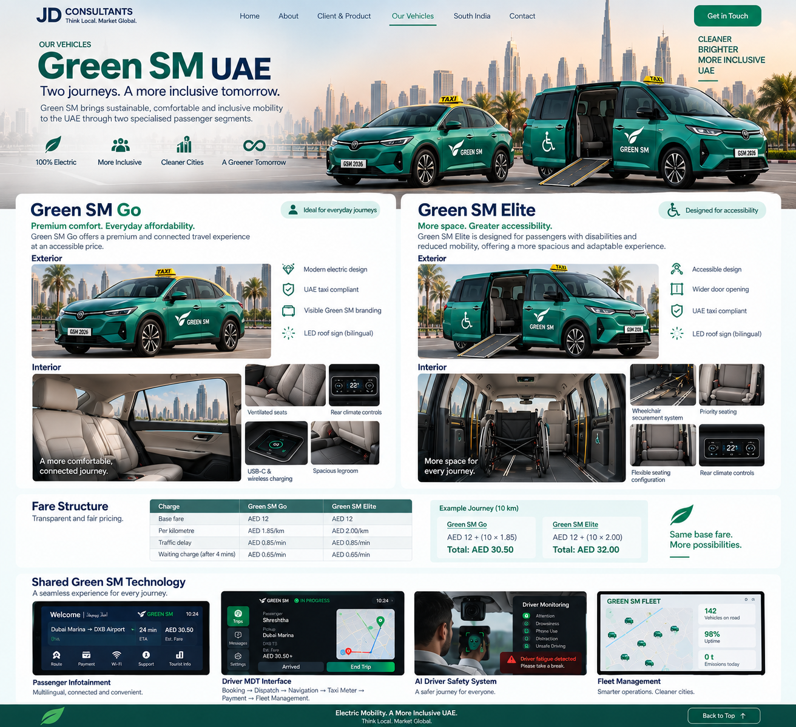

VinFast
A Vietnamese automotive company and the client behind the Green SM mobility project.
RoleClient / automotive partner
Project needAdapt the mobility proposition for a new market and audience.
JD Consultants is developing the market and brand strategy around Green SM, with VinFast as the client and the UAE as the current launch concept.
A Vietnamese automotive company and the client behind the Green SM mobility project.
A premium electric taxi and mobility proposition designed around comfort, accessibility, technology and efficient operations.
The concept combines electric mobility with a premium passenger experience, bilingual information, digital payments, accessibility support and fleet intelligence.
Extreme-climate cabin comfort, rear passenger controls, charging and a quiet electric ride.
Green SM Elite is designed around passengers with disabilities and reduced mobility.
Integrated taxi operations, live trip information, digital payment, Wi-Fi and driver safety monitoring.
The JD Consultants approach is to localise the customer experience without losing the product's core identity: electric, premium, practical and digitally connected.
